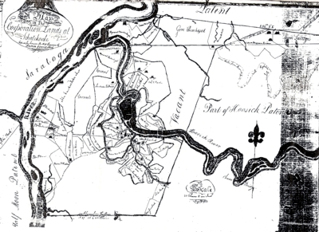

|
by
Albany was granted a 500 acre tract of land at "Schaghticoke" in its municipal charter of 1686. Initially, the Albany government did not follow up on its obligation to purchase the land from the Schaghticoke Indians. Instead, in 1698 Hendrick Van Rensselaer was authorized to obtain an Indian deed. In 1707, Van Rensselaer then sold his rights to the six square-mile tract east of the Hudson River and north of Rensselaerswyck to the city of Albany. The heart of the Schaghticoke tract was desirable farmland in the Hoosick Valley about sixteen miles northwest of Albany. However, some sources date the first European settlement as early as 1668.
Some of the first Schaghticoke landholders were younger sons of established Albany families. Others were more marginal but long-standing city people seeking a new start in the Hoosick Valley. At the same time, Livingston and others obtained Schaghticoke titles for investment purposes. Permanent settlement of the area was retarded by a bloody incident between settlers and Native peoples in October 1711 that left Albany native Captain Johannes Bradt and members of his household dead and others taken to Quebec as prisoners. Traditionally, the Dutch Reformed Church at Schaghticoke dates from 1714 - although it sometimes relied on missionary service from Albany and elsewhere. The first log church was destroyed during an Indian raid. Its surviving baptism and marriage records date from 1750. A new church was built in 1760. Beginning in 1715, parish burials were made in the Knickerbocker family plot. A number of city residents were married there. A base list of Schaghticoke freeholders in 1720 appears online. Included on that list were Samuel Dox and a number of other former Albany residents. With tenants farming good Hoosick Valley bottomland and paying annual rents in wheat and wood to their Albany landlord, Schaghticoke figured to become a successful agricultural enterprise. But because those farms were vulnerable to Indian attack, after 1745 the agricultural settlement did not flourish. Only the most determined settlers were able to resist the temptation to take refuge in Albany during the darkest days of the colonial wars and the War for Independence. During the Revolution, the Fourteenth Regiment of the Albany County militia represented Schaghticoke and was commanded by Johannes Knickerbacker and then by Albany native Pieter Yates. Schaghticoke officially became a district of Albany County in 1772 and a town in 1788. The census of 1790 showed the town with a population of 1,838 including 348 slaves - an indicator of the prosperity of its established farmers. Schaghticoke became part of new Rensselaer County in 1791. A transcription of the town census for 1800 has been placed online. Part of the town was annexed by Lansingburgh in 1819. At some point after the Revolution [we search for a more specific useful date], Schaghticoke tenants ceased paying rents to the city of Albany. Located on the banks of the Hoosic River and a few miles from the upper Hudson River and canal, Schaghticoke grew as a market town and manufacturing community during the nineteenth century. Today, it is the name of a small village and a much larger surrounding town. The Knickerbocker Historical Society preserves and interprets the history of greater Schaghticoke, its early settlers, and the traditions of "Knickerbocker History."
Spelled variously [but hopefully
consistently on this website], follow this
link to more references to Schaghticoke on this website. At one
time, Schaghticoke technically was part of the city of Albany even though
practically speaking it was not! Please consider
this offering as a tangential yet supporting part of the early Albany
story.
Sources: The scholarly work of record on the settlement of Schaghticoke is Rita B. Klopott's "The History of the Town of Schaghticoke, New York, 1676-1855" (Ph.D. dissertation, State University of New York at Albany, 1981). Several basic narratives are available online.
Grace Greylock Niles's classic The
Hoosac Valley is now online. The town's earliest inhabitants
are considered in Klopott, "Town of Schaghticoke," and online
as well. Wikipedia.
The Freeholders of 1720 were: Simon Danielse, Martin Delamon, Johannis De Wandelaer, Saml Doxie, Lewis Fele, Curset Fether (aka Corset Vedder), Abram Fort, Daniell Ketlyne, Johannis Knickerbacker, Adrian Quacumbus, Derrick Van Vechten, Peter Winne.
Compressed version of a copy of "A Map of the Corporation Lands at Schaghticoke" copied for Simeon De Witt, Esq. by Harmen Gansevoort and appearing on an online blog from Schaghticoke History. No further details on its provenance at this time. Larger version with clearer ownership lines. first posted 3/6/00; last updated: 1/24/13 |

{kind=link}